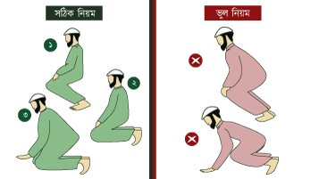
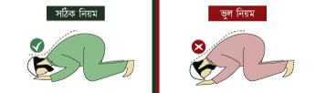
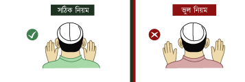
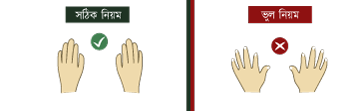
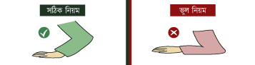
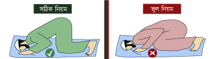
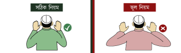
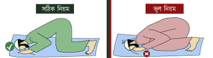
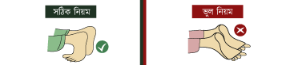
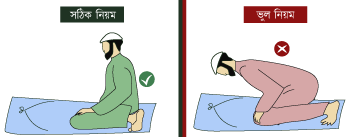

সিজদাহ করার নিয়ম
প্রথমে হাঁটু ভাঁজ করে এমনভাবে নিচু হবে যেন মাথা ও সীনা সামনে ঝুঁকে না পড়ে। হাঁটু মাটি স্পর্শ করার পরে সীনা ও মাথা সামনের দিকে অগ্রসর হবে।
হাঁটু জমিন স্পর্শ করার আগে শরীরের উপরের অংশ সামনে ঝুঁকাবে না।
হাঁটুর উপরে হাত স্থাপন করতে পারে, কিন্তু হাতের দ্বারা হাঁটুরে শরীরের ভর দিবে না। অন্যথায় হাঁটু ভাঁজ করার সময় শরীর সামনে ঝুঁকে পড়তে পারে।

জমিনে হাঁটু স্থাপন করবার পরে শরীর সামনে ঝুঁকাবে। প্রথমে দুই হাত, তারপরে নাক এবং সর্বশেষে কপাল জমিন স্পর্শ করাবে।

নাক সর্বদা জমিনে ঠেকিয়ে রাখবে। সিজদাহর মাঝে নাক মাটি থেকে তুলে ফেলা আদবের বরখেলাপ। সিজদাহর সময় চোখের নজর সর্বদা নাকের দিকে রাখবে।
সিজদাহর সময় মাথা দুই হাতের মাঝে এমনভাবে রাখবে, যাতে দুই হাতের বৃদ্ধাঙ্গুলির মাথা কান বরাবরে থাকে। দুই হাতের মাঝে চেহারা পরিমাণ জায়গা ফাঁকা থাকবে, এর অধিক নয়।

সিজদাহের সময় হাতের আঙুলগুলো মিলিয়ে রাখবে। হাতের আঙুলের মধ্যে কোন ফাঁক রাখবে না।

সিজদাহ অবস্থায় দুই পায়ের মধ্যে দাঁড়ানো অবস্থার ন্যায় জায়গা ফাঁক রাখবে। পায়ের আঙুলগুলোকে মুড়িয়ে কিবলামুখী করে রাখবে।
হাতের কুনুই জমিনে বিছিয়ে রাখবে না বরং উঁচু করে রাখবে।

উভয় বাহু বগল থেকে পৃথক রাখবে। বাহু বগলের সাথে মিশিয়ে রাখবে না।

কুনুইকে এমনভাবে দুই দিকে ছড়িয়ে দিবে না, যাতে পাশের মসল্লীর সমস্যা হয়। বাহুকে বগল থেকে পৃথক করে পাশের মুসল্লীর সমস্যা সৃষ্টি না করে সামাঞ্জস্যপূর্ণ অবস্থানে রাখবে।

পেট ও রান আলাদা আলাদা রাখবে। রানকে পেটের সাথে মিলিয়ে রাখবে না।

উভয় পা এমনভাবে খাড়া রাখবে যেন গোড়ালি উঁচু থাকে। পায়ের আঙুল মুড়িয়ে কিবলামুখী রাখবে। পা মাটি থেকে তুলে ফেলবে না। তিন তসবীহ পরিমাণ সময় পা মাটিতে স্পর্শ করে না থাকলে সিজদাহ আদায় হবে না।

দুই সিজদাহের মাঝখানে ধীর-স্থির ভাবে সোজা হয়ে বসবে। অতঃপর দ্বিতীয় সিজদায় যাবে। প্রথম সিজদাহ থেকে উঠে সম্পূর্ণ সোজা হয়ে না বসে দ্বিতীয় সিজদাহ করবে না।
